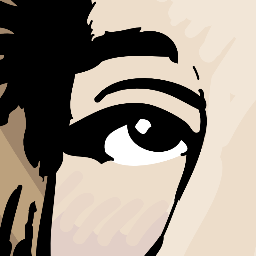
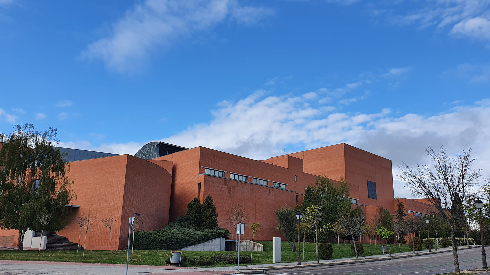

Actividades
Actualmente tenemos en mente las siguientes actividades:
- Concursos internacionales: SWERC -> ICPC
- Concursos nacionales: AdaByron
- Concursos interuniversitarios: std::derbi (UAM-CPrA - UCppM)
- Concursos locales
- Clases Mentores-Miembros
- Y mucho más!


